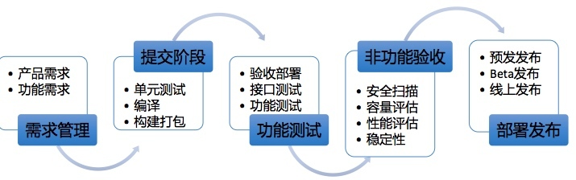
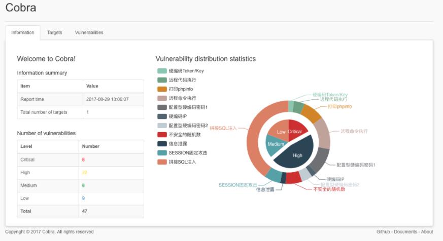
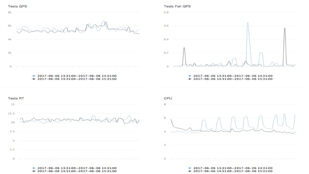
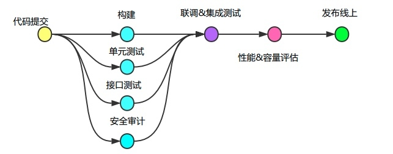

- 00 开篇词 带给你不一样的运维思考.md
- 01 为什么Netflix没有运维岗位？.md
- 02 微服务架构时代，运维体系建设为什么要以应用为核心？.md
- 03 标准化体系建设（上）：如何建立应用标准化体系和模型？.md
- 04 标准化体系建设（下）：如何建立基础架构标准化及服务化体系？.md
- 05 如何从生命周期的视角看待应用运维体系建设？.md
- 06 聊聊CMDB的前世今生.md
- 07 有了CMDB，为什么还需要应用配置管理？.md
- 08 如何在CMDB中落地应用的概念？.md
- 09 如何打造运维组织架构？.md
- 10 谷歌SRE运维模式解读.md
- 11 从谷歌CRE谈起，运维如何培养服务意识？.md
- 12 持续交付知易行难，想做成这事你要理解这几个关键点.md
- 13 持续交付的第一关键点：配置管理.md
- 14 如何做好持续交付中的多环境配置管理？.md
- 15 开发和测试争抢环境？是时候进行多环境建设了.md
- 16 线上环境建设，要扛得住真刀真枪的考验.md
- 17 人多力量大vs.两个披萨原则，聊聊持续交付中的流水线模式.md
- 18 持续交付流水线软件构建难吗？有哪些关键问题？.md
- 19 持续交付中流水线构建完成后就大功告成了吗？别忘了质量保障.md
- 20 做持续交付概念重要还是场景重要？看笨办法如何找到最佳方案.md
- 21 极端业务场景下，我们应该如何做好稳定性保障？.md
- 22 稳定性实践：容量规划之业务场景分析.md
- 23 稳定性实践：容量规划之压测系统建设.md
- 24 稳定性实践：限流降级.md
- 25 稳定性实践：开关和预案.md
- 26 稳定性实践：全链路跟踪系统，技术运营能力的体现.md
- 27 故障管理：谈谈我对故障的理解.md
- 28 故障管理：故障定级和定责.md
- 29 故障管理：鼓励做事，而不是处罚错误.md
- 30 故障管理：故障应急和故障复盘.md
- 31 唇亡齿寒，运维与安全.md
- 32 为什么蘑菇街会选择上云？是被动选择还是主动出击？.md
- 33 为什么混合云是未来云计算的主流形态？.md
- 35 以绝对优势立足：从CDN和云存储来聊聊云生态的崛起.md
- 36 量体裁衣方得最优解：聊聊页面静态化架构和二级CDN建设.md
- 37 云计算时代，我们所说的弹性伸缩，弹的到底是什么？.md
- 38 我是如何走上运维岗位的？.md
- 39 云计算和AI时代，运维应该如何做好转型？.md
- 40 运维需要懂产品和运营吗？.md
- 41 冷静下来想想，员工离职这事真能防得住吗？.md
- 42 树立个人品牌意识：从背景调查谈谈职业口碑的重要性.md
- 划重点：赵成的运维体系管理课精华（一）.md
- 划重点：赵成的运维体系管理课精华（三）.md
- 划重点：赵成的运维体系管理课精华（二）.md
- 新书 《进化：运维技术变革与实践探索》.md
- 特别放送 我的2019：收获，静静等待.md
- 结束语 学习的过程，多些耐心和脚踏实地.md
19 持续交付中流水线构建完成后就大功告成了吗？别忘了质量保障
上期文章我结合自己的实践经验，介绍了持续交付中流水线模式的软件构建，以及在构建过程中的3个关键问题。我们可以看出，流水线的软件构建过程相对精简、独立，只做编译和打包两个动作。
但需要明确的是，在持续交付过程中，我们还要做很多与质量保障相关的工作，比如我们前面提到的各类功能测试和非功能测试。
所以，今天我们聊一聊在流水线构建过程中或构建完成之后，在质量保障和稳定性保障方面，我们还需要做哪些事情。
首先，我们回顾一下之前总结的这张流程图：

可以看出，在流水线构建过程中，我们尤其要重视以下3个方面的工作内容。
依赖规则限制
主要是对代码依赖的二方包和三方包做一些规则限制。比如，严格限定不允许依赖Snapshot版本；不允许引入有严重漏洞的版本，如Struts2的部分版本；检测JAR包冲突，如我们常用的Netty、Spring相关的包；限定某些软件包的最低版本发布，如内部提供的二方包，以确保版本收敛，降低维护成本。
过滤规则上，通过Maven构建软件包过程中生成的dependency:list文件，将GroupID和ArtifactID作为关键字，与我们设定的版本限制规则进行匹配。
两个示例如下（真实版本信息做了修改）：
检测JAR包冲突：
[WARNING] 检测到jar包冲突: io.netty:netty-all, 版本: 4.0.88.Final, 当前使用: 4.0.22.Final
限定最低版本：
[WARNING] 检测到 mysql:mysql-connector-java, 版本 5.0.22, 版本不符合要求, 需要大于等于 5.0.88。旧版存在已知兼容性bug，导致连不上数据库, 请在2018-01-15 00:00:00前升级完成, 否则将被禁止发布，如有疑问，请联系@发布助手
JAR包依赖以及维护升级，通常是一件令我们比较头疼的事情，特别是在运行时出现的冲突异常，更是灾难性的。为了从技术角度更好地进行管理，我们需要做好隔离，这一点可以利用JVM类加载机制来实现。
如果你有兴趣，可以在网上参考阿里的潘多拉（Pandora）容器设计资料，这里我们就不作详细介绍了。
功能测试
包括单元测试、接口测试、联调测试和集成测试。这里的每个测试环节起到的作用不同，联调测试和集成测试依赖的主要手段还是手工验证，所以这里我们分享下可以通过自动化手段完成的单元测试和接口测试。
这里主要用到的几个工具：
- JUnit 和TestNG，分别做单元测试和接口测试；
- Maven插件，maven-surefire-plugin，用来执行JUnit或TestNG用例；
- JaCoCo，分析单元测试和接口测试后的代码覆盖率；
- Jenkins，自动化测试任务执行，报表生成和输出，与Maven、JUnit、GitLab这些工具结合非常好。
关于上述这几种工具，我在此就不展开详细介绍了，你可以自行上网查询和学习。
下面，我们分析一下功能测试中的两个重要环节：单元测试和接口测试。
- 单元测试，由开发完成测试用例的开发，对于需要连接DB的用例，可以用DBUnit这样的框架。用例的自动执行，每次代码开发完成，开发执行mvn test在本地进行自测通过，然后提交到GitLab。可以在GitLab中设置hook钩子，和回调地址，提交的时候在commitMsg增加钩子标识，如unitTest，这样提交后就触发回调自动化单元测试用例执行接口，确保提交后的代码是单元测试通过的，最终可以通过JaCoCo工具输出成功率和代码覆盖率情况。
- 接口测试，用例编写上使用TestNG，这个测试框架相比JUnit功能更全面，也更灵活一些。但是过程上与单元测试类似，当然也可以不通过hook方式出发，可以通过手工触发进行测试。
上述自动化测试环节结束，软件包就可以发布到我们之前说的项目测试环境或集成测试环境进行功能联调和测试了，这时就需要部分人工的介入。
非功能测试
在功能验证的同时，还需要并行进行一些非功能性验证，包括安全审计、性能测试和容量评估 。分别介绍如下：
- 安全审计，由安全团队提供的源代码扫描工具，在构建的同时，对源代码进行安全扫描，支持Java和PHP语言。可以对源代码中的跨站脚本、伪造请求、SQL注入、用户名密码等敏感信息泄露、木马以及各类远程执行等常见漏洞进行识别，对于高危漏洞，一旦发现，是不允许构建出的软件包发布的。而且实际情况是，不审不知道，一审吓一跳，我们前面几次做代码扫描时，各种漏洞触目惊心，但是随着工具的支持和逐步改进，基本已经将这些常见漏洞消灭在萌芽状态。
下面是扫描结果的简单示例（目前扫描工具已经开源，请见文末链接）：

- 性能和容量压测，主要针对核心应用，进行发布前后的性能和容量比对，如果出现性能或容量差异较大，就会终止发布。关于这一点，我在后面稳定性保障的文章中会详细介绍到。这个验证工作，会在预发或Beta环境下进行验证，因为这两个环境是最接近线上真实环境的。
下图是一张发布前后的效果比对示意图，正常情况下，性能曲线应该是基本重叠才对，不应该出现较大的偏差。

最后
到这里，我们稍作一个总结。
关于持续交付中的流水线模式，我们在前面两期文章以及本期的分享中，相对完整地介绍了从需求分解开始，到代码提交、软件构建，再到功能和非功能测试验证的整个过程。这个过程就是我们常说的持续集成。
之所以我没有在一开始引入这个概念，是因为，如果我们将注意力集中到这一过程中具体的动作和问题上，会更有利于我们理解，而不是一开始就被概念性的术语和框架束缚住。
流水线模式功能测试和非功能测试的整个过程可以总结如下：

同时，我们在上面持续集成的过程中，要基于前面介绍的各类环境和基础配置管理，比如功能验证就需要在线下环境中的开发环境、项目环境以及集成测试环境上进行验收。
而非功能验证的性能和容量评估，就需要在线上环境里的预发或Beta环境中完成。这里就已经涉及到了软件的部署发布。
下一期文章，我将分享线上发布的整个过程，并对整个持续交付体系内容做一个收尾。欢迎你留言与我讨论。
如果今天的内容对你有帮助，也欢迎你分享给身边的朋友，我们下期见！
附：源代码安全审计工具 https://github.com/wufeifei/cobra
© 2019 - 2023 Liangliang Lee. Powered by Vert.x and hexo-theme-book.